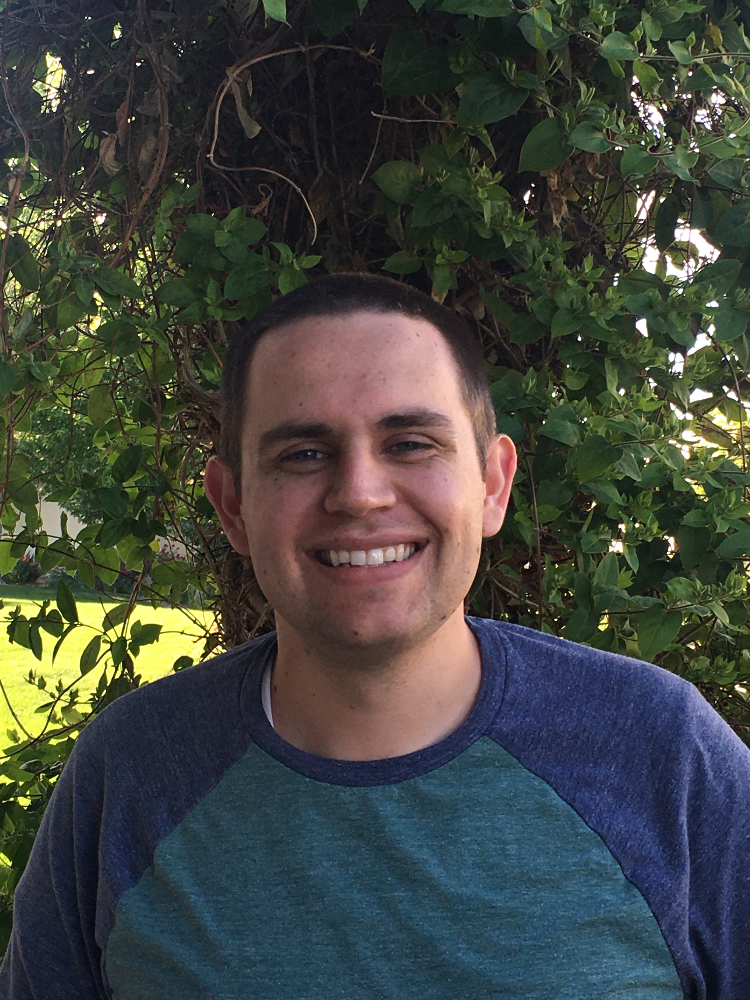
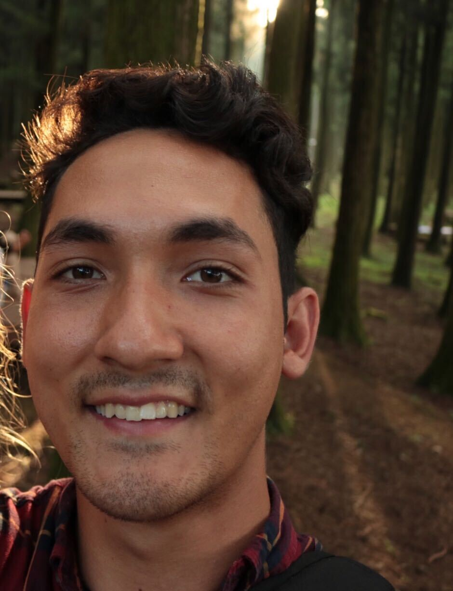
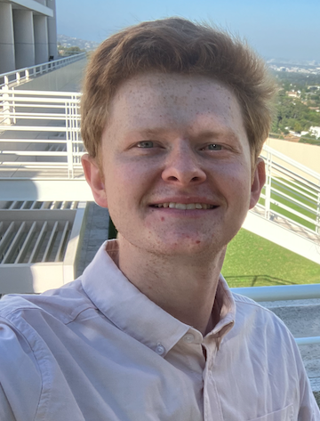
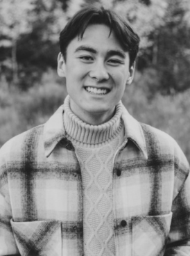
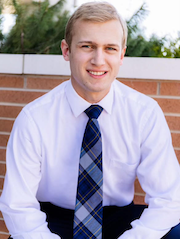

Flight, Optimization, and Wind Laboratory
© 2026. All rights reserved.
Flight, Optimization, and Wind Laboratory
© 2026. All rights reserved.

Andrew Ning is interested in the complex tradeoffs that occur in engineering design. The design of wind energy and flight systems involves strong interactions across multiple disciplines. Optimization and machine learning are useful tools in exploring these design decisions. In addition to design applications, he is interested in developing fundamental algorithms and methodologies for efficient aerodynamic analysis and optimization.
Dr. Ning received his PhD and MS degrees from Stanford University in the Aircraft Aerodynamics and Design Group. After graduation he worked at the National Renewable Energy Laboratory on wind turbine aeroelastic analysis and optimization (where he currently holds a joint appointment). He loves engaging in ideas and learning with the excellent students and faculty at BYU. Outside of engineering he enjoys mountain biking, soccer, basketball, and reading.

Teagan Nakamoto grew up on a chicken farm on the Big Island of Hawai’i and graduated April 2017 from BYU with his BS Mechanical Engineering degree and a minor in editing. He is researching applications of convex optimization to wind farm design. Among a great many other things, Teagan enjoys reading Brandon Sanderson books, running mountainous trails, eating Spam musubis, and listening to metal remakes of Disney songs.

Ryan Anderson is intrigued by the design of eVTOL aircraft, particularly utilizing computational aerodynamics and acoustics models. This interest began with an Honors thesis at the conclusion of his BS Mechanical Engineering degree at BYU in 2019. He has experience researching the effects of weather on the aerodynamic and battery performance of fixed and rotary wing drones, and assisted in the development of a fixed wing drone for the AUVSI-SUAS competition in 2019. He is currently pursuing a PhD in Mechanical Engineering at BYU. In his spare time, Ryan enjoys playing basketball, rock climbing, hiking, and making music with friends.

Tyler Critchfield is interested in electric VTOL aircraft design optimization to reduce acoustic environmental impact, with the goal of promoting public acceptance and eventual integration of urban air mobility into modern society. Tyler is from Puyallup, Washington, and graduated from BYU in 2019 with a B.S. in Mechanical Engineering and a minor in Business Management. In his free time he enjoys hiking, family history, sports, and playing board games with family and friends.

Adam Cardoza is interested in the physics that describe the world of motion, especially flight. He enjoys building multifaceted aerodynamic models to explore the capabilities of different aircraft. Current research interests include computational modeling, systems optimization and algorithm development. Adam graduated from Brigham Young University with a Bachelors of Science in Mechanical Engineering and minors in Mathematics and Ballroom Dance. He enjoys camping, climbing and cooking. Recently, he has begun building and flying remote control aircraft.

Benjamin Varela is interested in modeling complex aerodynamic systems, especially those relating to wind energy. His goal is to create tools to design more efficient wind farms through accurate modeling and advanced optimization of complex systems. Benjamin graduated from BYU with a BS in Mechanical Engineering in 2021. In his free time he enjoys playing board games, listening to music, cooking, and hiking.

James Cutler is interested in wind farm optimization. His past experience involves optimization of turbine tilt in a wind farm, wind farm layout optimization with boundary and cabling cost constraints, small wind turbine design and testing, damage equivalent load calculations for simulations of Sandia’s SWIFT site wind turbines, and design of post-processing tools for Sandia’s high-fidelity Nalu-Wind simulations. He is currently researching wake modeling methods that can sufficiently capture complex aerodynamics associated with wind farm control strategies such as periodic pitch control. He enjoys collaborating on art projects with his wife, watching and making movies, gardening, sports, and exploring new ways of cooking.
Eric Green is interested in the design optimization of VTOLs with a focus on using medium-to-high fidelity aerodynamic models to model unsteady flight. Eric graduated from BYU in 2021 with a B.S. in Mechanical Engineering. In his free time he enjoys hiking, climbing, and playing an assortment of musical instruments.

Andrew Tagg is a PhD student currently studying and researching in the FLOW lab after obtaining a BS in Mechanical Engineering from BYU in 2023. His research interests are focused on employing mixed fidelity aerodynamic models to optimize the design and control of aircraft. Apart from his academic interests, Andrew enjoys going for runs, hiking, cycling, watching movies, and spending time with friends and family.

Weston Pace graduated with a bachelor’s degree in Mechanical Engineering from Brigham Young University in April 2025. As an undergraduate researcher, he worked in the FLOW lab supporting graduate students on projects involving dynamic stall and realistic wind farm optimization. These experiences started his interest in aerodynamics and optimization. Weston is excited to continue learning about machine learning and its applications to aerodynamic problems. After completing his master’s degree, he hopes to work in the wind energy industry. Outside of research, Weston enjoys playing indoor and outdoor volleyball, as well as cooking and sharing meals with family and friends.
Porter Nelson

Ben Wright earned his B.S. in Mechanical Engineering from Brigham Young University in April 2024. His research focuses on the application of machine learning and computational fluid dynamics (CFD) to predict hypersonic flow fields, with broader interests in the future of rocketry, spacecraft design, and high-speed flight. Ben grew up in Northern California, first in the Sacramento area and then Redding. From 2017 to 2019, he served a mission in Mexico City. He met his wife in 2022, and they were married in August 2023. Outside of research, Ben enjoys mountain climbing, dirt biking, playing the piano, listening to rock music, gaming, eating good food and watching scary movies with his wife.